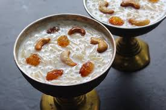

1. First, wash the rice or vermicelli thoroughly and keep it ready for cooking. Heat a small amount of ghee in a thick-bottomed vessel and roast the rice or vermicelli gently until it becomes light golden and aromatic. Roasting improves the flavor and gives the payasam a rich traditional taste. Be careful not to burn the ingredients while roasting because slow cooking helps maintain the soft texture.
2. In another vessel, boil full cream milk while stirring continuously so it does not stick to the bottom. Once the milk starts boiling, add the roasted rice or vermicelli slowly and mix properly. Cook the mixture on low flame until the rice becomes soft or the vermicelli cooks completely. Slow cooking helps the payasam become creamy, smooth, and naturally flavorful.
3. Add sugar or jaggery into the cooked mixture and stir continuously until it dissolves completely. If using jaggery, cool it slightly before adding to avoid curdling the milk. The sweetness spreads evenly throughout the payasam and gives it a delicious rich taste. Continue boiling gently until the texture becomes slightly thick and creamy.
4. Add cardamom powder, saffron strands, and a few drops of rose essence to enhance the aroma and flavor. These ingredients give the payasam a festive fragrance and royal taste that makes the dessert more special and delicious during celebrations.
5. Heat ghee in a small pan and fry cashew nuts, almonds, raisins, and pistachios until golden brown. Add these roasted dry fruits into the payasam and mix gently. The crunchy dry fruits increase the richness and improve the texture of the dessert beautifully.
6. Continue simmering the payasam for a few more minutes so all the flavors combine properly. The aroma of cardamom, roasted dry fruits, and saffron spreads throughout the dessert, making it even more tempting and flavorful. The consistency should remain smooth, creamy, and slightly flowing.
7. Transfer the prepared payasam into serving bowls and garnish with extra pistachios, almonds, saffron strands, and raisins for a rich and attractive presentation. The colorful garnish makes the dessert look festive and perfect for special occasions and family gatherings.
8. Finally, serve the special payasam warm or chilled according to your preference during festivals, celebrations, and traditional events. Its creamy texture, rich sweetness, aromatic flavor, and crunchy dry fruits make payasam one of the most loved Indian desserts enjoyed by people of all ages.
